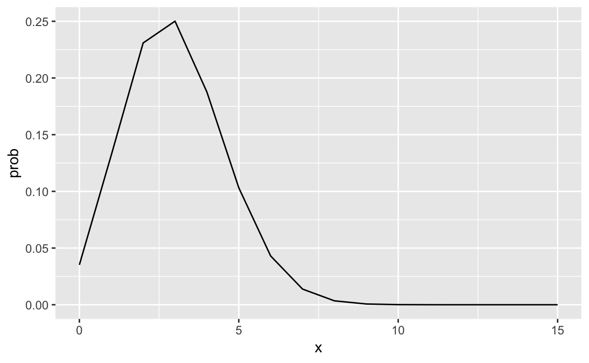
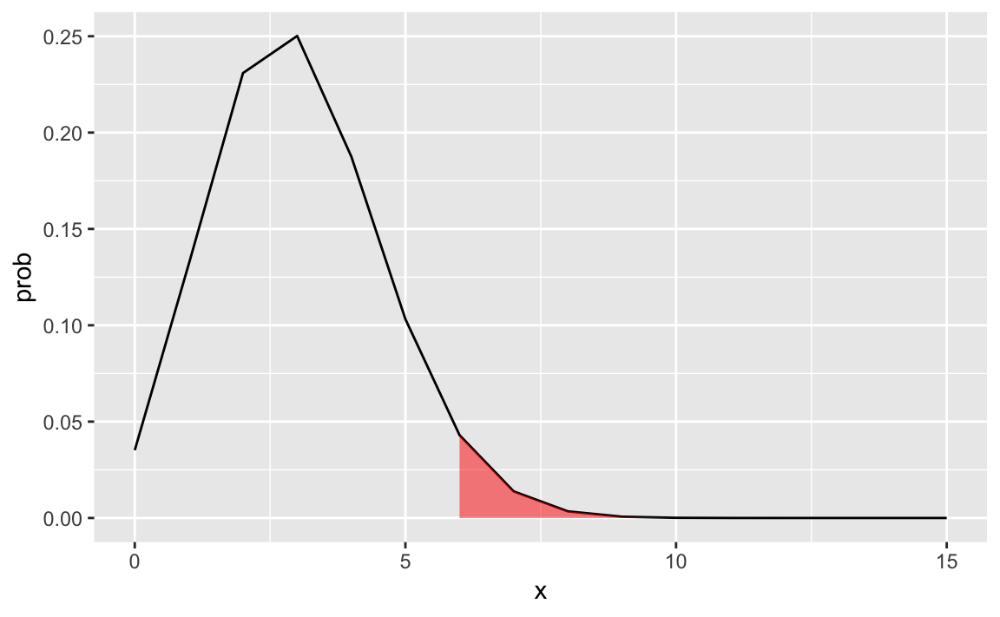
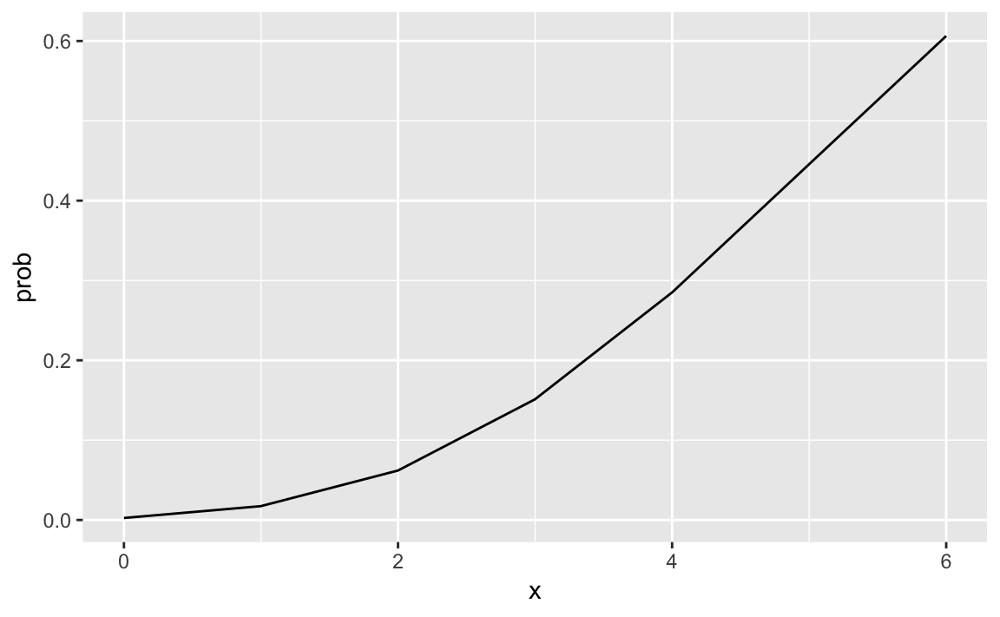
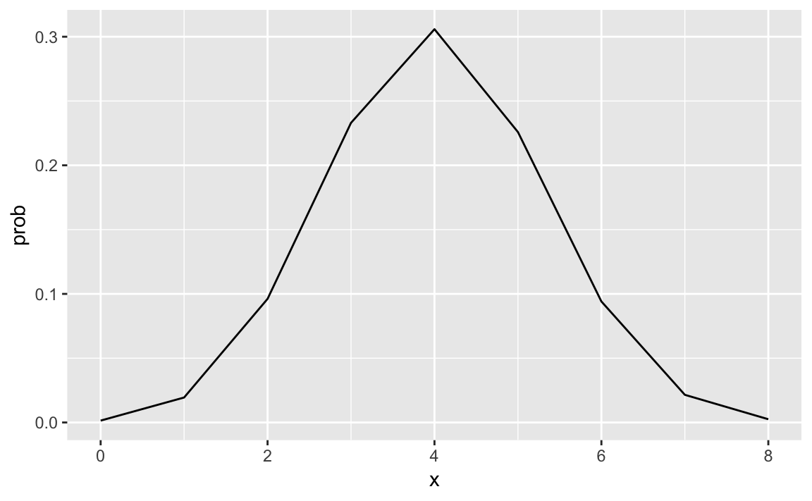

3 Homework 2
3.1 Problem 1
n <- 15
p <- 0.2
q <- 1 - p
mean <- n * p
sigma <- sqrt(mean * q)
df <- data.frame(x=0:n, prob=dbinom(0:n, n, prob=p))
df$cprob <- pbinom(0:n, n, prob=p)
df
#> x prob cprob
#> 1 0 3.52e-02 0.0352
#> 2 1 1.32e-01 0.1671
#> 3 2 2.31e-01 0.3980
#> 4 3 2.50e-01 0.6482
#> 5 4 1.88e-01 0.8358
#> 6 5 1.03e-01 0.9389
#> 7 6 4.30e-02 0.9819
#> 8 7 1.38e-02 0.9958
#> 9 8 3.45e-03 0.9992
#> 10 9 6.72e-04 0.9999
#> 11 10 1.01e-04 1.0000
#> 12 11 1.15e-05 1.0000
#> 13 12 9.54e-07 1.0000
#> 14 13 5.51e-08 1.0000
#> 15 14 1.97e-09 1.0000
#> 16 15 3.28e-11 1.0000
ggplot(data=df, aes(x=x,y=prob)) +
geom_line() +
geom_ribbon(data=subset(df,x==15),aes(ymax=prob),ymin=0,
fill="red", colour = NA, alpha = 0.5)
# All 15 drives will have a blood alcohol level exceeding the legal limit.
#a. p(y = 15)
#binompdf(15,0.02,15)
dbinom(15, size=15, prob=0.2)
#> [1] 3.28e-11
# Exactly 6 of the 15 drives will exceed the legal limit
#b. p(y = 6)
#binompdf(15,0.02,6)
dbinom(6, size=15, prob=0.2)
#> [1] 0.043
# Of the 15 drivers, 6 or more will exceed the legal limit
#c. p(y >= 6) = 1 - p(y <= 5)
#1 - binomcdf(15,0.02,5)
1 - pbinom(5, size=15, prob=0.2)
#> [1] 0.0611
ggplot(data=df, aes(x=x,y=prob)) +
geom_line() +
geom_ribbon(data=subset(df,x>=6 & x<=15),aes(ymax=prob),ymin=0,
fill="red", colour = NA, alpha = 0.5)
# All 15 drivers will have a blood alcohol level within the legal limit
#d. p(y = 0)
#binompdf(15,0.02,0)
pbinom(0, size=15, prob=0.2)
#> [1] 0.0352
3.2 Problem 2
n <- 6
df <- data.frame(x=0:n, prob=ppois(0:n, n))
df
#> x prob
#> 1 0 0.00248
#> 2 1 0.01735
#> 3 2 0.06197
#> 4 3 0.15120
#> 5 4 0.28506
#> 6 5 0.44568
#> 7 6 0.60630
ggplot(data=df, aes(x=x,y=prob)) +
geom_line()
# No customers arrive
# p(y = 0)
#poissonpdf(6,0)
dpois(0,6)
#> [1] 0.00248
# More than six customers arrive
#b. p(y > 6) = 1 - p(y <= 5)
# 1 - poissoncdf(6,6)
1-ppois(6,6)
#> [1] 0.394
# At most three customer arrive
#c. p(y <= 3)
#poissoncdf(6,3)
ppois(3,6)
#> [1] 0.151
3.3 Problem 3
Find the probability of 8 or more women being laid off by chance alone.
n <- 30
w <- 12
m <- 18
l <- 10
dhyper(8, w, m, l)
#> [1] 0.00252
df <- data.frame(x=0:8, prob=dhyper(0:8, w, m, l))
df$prob1 <- phyper(0:8, w, m, l)
df
#> x prob prob1
#> 1 0 0.00146 0.00146
#> 2 1 0.01942 0.02088
#> 3 2 0.09612 0.11700
#> 4 3 0.23303 0.35002
#> 5 4 0.30585 0.65587
#> 6 5 0.22586 0.88173
#> 7 6 0.09411 0.97584
#> 8 7 0.02151 0.99735
#> 9 8 0.00252 0.99987
ggplot(data=df, aes(x=x,y=prob)) +
geom_line()